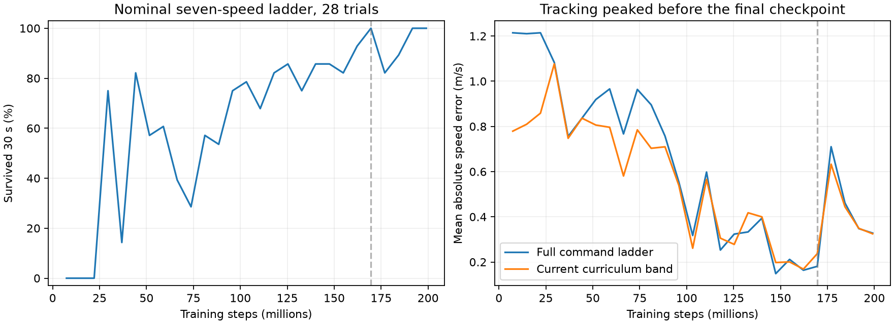

Training completed: 200.01M steps in 13h29m. Best saved checkpoint: 169.57M steps. Start with the 0.75 m/s clips below. Left foot is blue, right foot orange; both camera views show the same instant.
These are GPU MJX replay recordings. Job 3226290 completed in 4m27s. The saved policies drive the frozen training simulator from the supplied homing pose; local rendering displays the recorded motion. Each condition is one nominal trial, seed 1000, with a fixed speed command and no STOP command.
Look at foot sliding, clearance, alternating support and small repeated steps. All six trials survive, but survival and speed tracking do not establish clean walking.
1x
169.57M steps; completed 25 s without falling. Mean body-forward speed after 5 s: 0.714 m/s. Open / download
200.01M steps; completed 25 s without falling. Mean body-forward speed after 5 s: 0.724 m/s. Open / download
169.57M steps; completed 25 s without falling. Mean body-forward speed after 5 s: 0.314 m/s. Open / download
200.01M steps; completed 25 s without falling. Mean body-forward speed after 5 s: 0.388 m/s. Open / download
169.57M steps; completed 25 s without falling. Mean body-forward speed after 5 s: 1.241 m/s. Open / download
200.01M steps; completed 25 s without falling. Mean body-forward speed after 5 s: 1.359 m/s. Open / download

The saved best policy survived 28/28 fixed-ladder trials with 0.181 m/s mean tracking error. The last periodic evaluation near 199.1M steps also survived 28/28, but error rose to 0.328 m/s. The final checkpoint's separate command-redraw evaluation had no falls in 28 thirty-second trials. These are different protocols.
Experiment report · Run status · Replay provenance · Earlier CPU deployment previews